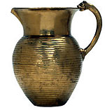

| |
Where
were the Hanging Gardens of Babylon?
What
was the Ark of the Covenant?
What was the Tower of Babel?
What
was the Temple of Solomon?
Is the Baghdad Battery really
an electric battery?
Is the Nimrud
Lens really an optical lens?
What is a ziggurat?
What
role did astronomy play in the ancient Near East?
List
of frequently requested objects.
Where were the Hanging Gardens of Babylon?
These gardens were described by classical authors as one of the Seven
Wonders of the Ancient World, but their location and even existence
is uncertain. This is largely because there are no contemporary descriptions
of them and the reliability of later authors is therefore questionable.
Moreover, classical authors frequently confused Babylon and Nineveh.
King Sennacherib described in detailed inscriptions how he diverted
several mountain streams to bring water via an aqueduct into his garden
at Nineveh, raising it to the top of the garden by means of devices
cast in bronze, and building artificial hills upon stone vaults. It
was declared a wonder for all peoples, and may be the origin of the
legend of the Hanging Gardens of Babylon.

What
was the Ark of the Covenant?
The Ark was said to be a box made of acacia wood and entirely plated
with gold. It was intended as a container for the two stone tablets
bearing the terms of God's covenant with Israel given to Moses at Mount
Sinai. Biblical texts set the creation of the Ark in the period of Israel's
Exodus from Egypt when Israel had no permanent temple, so where in other
cultures covenant or treaty documents were kept for safety in shrines
here Israel needed a more portable box. It was viewed as God's footstool
where he was enthroned; it was the place where he appeared and consequently
became a symbol of his presence. Once Israel was established in Canaan,
the Ark was based at Shiloh and, after being captured by the Philistines
and returned, was eventually taken by David to Jerusalem where Solomon
placed it in his temple. It was probably destroyed when the forces of
Nebuchadnezzar II sacked the temple, but legends assert that it was
hidden in Mount Nebo in Jordan, in a cave beneath Jerusalem, or was
taken much earlier to Ethiopia.
What was the Tower of Babel?
This was described in the Old Testament as a structure erected by Noah's
descendants, some time after the deluge, in Babylonia. According to
Genesis, the Babylonians wanted to make a name for themselves by building
a mighty city and a tower 'with its top in the heavens'. God punished
them for their pride by confusing their language so that they could
not understand each other and scattering them across the earth.
There are archaeological
indications that this tower did exist. Babylon was certainly an important
city and a ziggurat honouring the god Marduk was built, destroyed and
rebuilt until it was most likely the tallest structure in the region.
The tower's most splendid incarnation was probably under Nebuchadnezzar
II (604-562 BC), who rebuilt the tower to stand some 90 metres high.
Archaeologists examining the remains of the city of Babylon have found
what appears to be the foundation of the tower. Modern scholars, however,
are divided as to whether the Old Testament account refers to a real
tower or whether the story is purely theological.
What was the Temple of Solomon?
Solomon, who reigned during the tenth century BC, embarked on a vast
and expensive building programme within his kingdom. He was especially
lavish in his capital, Jerusalem, where among many magnificent new buildings
he constructed his famous Temple. The concentration of religious ritual
at the Temple made Jerusalem a place of pilgrimage and an important
cultural centre. No archaeological evidence has been found of the Temple,
as it is buried beneath a later platform, but the Bible does provide
us with detailed descriptions and measurements. We can also assume that
the architectural style of the Temple was similar to that of other buildings
in the region during the same period of the early Iron Age, with a long
sanctuary entered from one end through a columned portico flanked by
the columns named Jachin and Boaz.
Is the Baghdad Battery really an electric battery?
The 'Baghdad Battery' is an earthenware jar preserved in the Iraq Museum,
Baghdad. It dates to about the 5th or 6th century AD and consists of
an earthenware shell with a cylinder of copper set in asphalt and an
iron rod in the centre. The jar was first described by the German archaeologist
Wilhelm Konig who thought that it looked like an electric battery. When
a reproduction was filled with an electrolyte it produced about two
volts. If this theory is correct, the batteries could have been used
for electroplating. However, most scientists and archaeologists today
do not accept the electric battery theory as there is no evidence that
this technique was used in antiquity. It is more likely that the jar
and its contents were used in a magical ritual.
Is the Nimrud Lens really
an optical lens?
This 'lens' was found in 1850 in the course of A.H. Layard's excavations
in the North-West Palace at Nimrud (Iraq) and probably dates to about
the 8th century BC. It is normally on display in Room 55 (Later Mesopotamia
Gallery), case 9 at the British Museum. It is an oval 'lens' of ground
rock crystal with one plane and one slightly convex face. It has often
been regarded as an optical lens and as such would be the oldest known
lens in the world. However, most experts today agree that it would have
been of little or no practical use as a lens, and interpret it as a
piece of decorative inlay.
What
is a ziggurat?
A ziggurat is a multi-storey platform with a temple on the summit. Such
structures are first found in southern Mesopotamia dating from about
2,200 BC, and continued to be constructed until 550 BC, also being imitated
in the north by the Assyrians. There are three main theories about the
origins of ziggurats. There is the theory that they were developed as
a means of elevating grain to keep it dry during spring flooding. Another
idea suggests that they are artificial mountains representing the original
home of the Sumerians. However, the most widely held theory is that
the ziggurat was seen as a ladder to heaven, with the shrine on the
summit elevating the priests to the gods themselves. The ziggurat served
as the focal point of the city and would be visible from afar. The largest
surviving ziggurat is at Chogha Zanbil in Iran. It was built in the
13th century BC and stands 100 metres square and 24 metres tall, although
this is thought to be just under half its original height. The best
preserved ziggurat is at Ur in southern Mesopotamia, built in about
2110 BC.
What role did astronomy play in the ancient
Near East?
There was very little distinction in the ancient Near East between astronomy
and astrology. The observation and recording of celestial phenomena
were mainly for the purpose of gathering information for the prediction
of events, and were a form of divination. A belief in divine signs was
linked with objective observation, mathematical calculation and the
correct prediction of the movement of celestial bodies. The earliest
known systematic interest in celestial events occurs in Babylonian lunar
and solar omens in about 1700 BC. These omens concerned observations
of the moon, sun, planets and stars, as well as earthquakes and weather
patterns, and they were linked to predictions about the king and state.
In the Neo-Assyrian period scholars regularly observed the heavens and
made reports and predictions about political and economic events. The
purpose of the reports was to inform the king of propitious times for
certain activities, and to protect him against evil portents. Later
developments, in the Achaemenid period and after, included the development
of personal horoscopes, the invention of the zodiac in Babylonia in
about 500 BC, and the practice of keeping astronomical diaries recording
lunar, planetary, meteorological, economic, political and other events.
frequently
requested objects
The
Nabonidus Cylinder
From Sippar, southern Iraq, 555-540 BC (ANE 91109)
Room 55 (Later Mesopotamia)
The
Cyrus Cylinder
From Babylon, southern Iraq, about 539-530 BC (ANE 90920)
Room 52 (Ancient Iran)
The
Standard of Ur
From Ur, southern Iraq, about 2600-2400 BC (ANE 121201)
Room 56 (Early Mesopotamia)
The
Royal Game of Ur
From Ur, southern Iraq, about 2600-2400 BC (ANE 120834)
Room 56 (Early Mesopotamia)
The
Ram in the Thicket
From Ur, southern Iraq, about 2600-2400 BC (ANE 122200)
Room 56 (Early Mesopotamia)
The
Dying Lion
From Nineveh, northern Iraq, around 645 BC (ANE 1992.4-4.1)
Room 55 (Later Mesopotamia)
The
Amarna Letters
From Tell el-Amarna, Egypt, about 1360-1333 BC (E.29784-E.29865)
Room 55 (Later Mesopotamia) (about 12 on display)
The
Lion Hunt
From Nineveh, northern Iraq. mostly 645-635 BC (ANE 118911, 118914-6,
120861-2, 124781, 124795-7, 124850-124899, 124921, 127370)
Room 10 (Khorsabad Palace reliefs & Assyrian sculpture)
The
Lachish Reliefs
From Nineveh, northern Iraq about 700-681 BC (ANE 118813, 118836, 123339,
124775-7, 124902-15, 124947, 124952, 130728, 135198-9, 135205, 135302)
Room 10 (Khorsabad Palace reliefs & Assyrian sculpture)
The
Oxus Treasure
From the region of Takht-i Kuwad, Tadjikistan, 5th-4th century BC (ANE
123901-124098)
Room 52 (Ancient Iran)
The
Black Obelisk of Shalmaneser III
from Nimrud, northern Iraq, 858-824 BC (ANE 118885)
Room 8 (Nimrud Palace Reliefs)
The
Nimrud Ivories
From Nimrud, northern Iraq, 9th-7th century BC (within N.728-N.1979
and ANE 118099-134960)
20 in Room 55 (Later Mesopotamia), 8 in Room 57 (The Ancient Levant),
2 in Room 89 (Assyrian art) and over 200 in Study Collection
|
|

Gold
jug from the Oxus treasure Achaemenid Persian, 5th-4th century BC, from
the region of Takht-i Kuwad, Tadjikistan
|
|
|
|